Manual de identidad de marca · v1.0 · Septiembre 2026
La marca y su arquitectura
Propósito, posicionamiento y valores
Personalidad y voz
Logotipo e isotipo
Versiones y variantes de color
Área de respeto, tamaños y usos incorrectos
Color · Tipografía · Elementos gráficos · Fotografía
Redes sociales
Portadas y avatar
Tarjeta, certificado y Hotmart
Reglas legales en cada pieza
Este manual es la fuente de verdad visual de Liberty Trading Club. Si una pieza publicada lo contradice, lo que está mal es la pieza. Los archivos fuente viven en branding/assets/liberty-trading-club del repositorio.
Liberty Trading Club es el producto de educación de Luis Riofrio, trader cuantitativo: formación en trading algorítmico cuantitativo, en pago único de $1,500 con acceso de por vida.
La marca madre es la persona. En servicios financieros la confianza se deposita en un nombre y una cara, no en un logo. Liberty es la casa de productos y siempre va respaldada por Luis Riofrio.
El sector de educación financiera en Latinoamérica tiene un problema de credibilidad: casi nadie muestra resultados verificables. Nuestra ventaja no es enseñar mejor. Es ser auditables.
"Un trader cuantitativo que opera con su propio dinero, publica su track record y te enseña a construir el tuyo."
Track record público y verificable.
Hipótesis, backtest, Walk-Forward. Nada se decide a ojo.
Los bots se entregan con su código. Cero cajas negras.
El portafolio crece con la estrategia de cada alumno.
Escribimos como alguien que ya tiene los datos y no necesita convencer a gritos. Primera persona siempre: "te enseño", no "ofrecemos formación".
| Eje | Posición |
|---|---|
| Formal ↔ Cercano | Cercano: tuteo, sin coloquialismos |
| Técnico ↔ Simple | Técnico: términos exactos, explicados |
| Contenido ↔ Efusivo | Contenido: afirmamos, no exclamamos |
| Personal ↔ Corporativo | Personal: habla Luis, no una empresa |
Filtro antes de publicar: ¿podría decir esto un vendedor que no opera? Si sí, se reescribe.
| No decimos | Decimos |
|---|---|
| Rentabilidad garantizada | Track record público y verificable |
| Sistema infalible | Validado con Walk-Forward y Montecarlo |
| Te damos $200k | Pase directo a una cuenta fondeada de $200k |
| Asesor de inversiones | Trader cuantitativo |
| Gestiono tu dinero | Te enseño a operar con tu propia cuenta |
| Plazas limitadas, solo hoy | (nunca escasez falsa) |
Titulares: máximo 6 palabras, sin signos de exclamación, con la mitad que carga el significado en dorado.

| "Liberty" | Cormorant Garamond italic 300, en degradado latón a 135°. Es la voz editorial. |
| Regla | Línea dorada al 55%. Representa la disciplina: el límite que no se cruza. |
| "TRADING CLUB" | DM Mono en mayúsculas, tracking amplio, crema. La voz de terminal: dato, no promesa. |
El texto de todos los logos está convertido a trazos: no depende de tener las fuentes instaladas.

Una "L" italic cuyo pie se prolonga en tres barras ascendentes, dentro de la misma caja redondeada con borde de latón que el monograma LR de Luis. Eso lo emparenta con la marca madre sin copiarla.
| La L | Liberty. La inicial en la misma serif del logotipo. |
| Las barras | El portafolio de bots y un crecimiento medido, paso a paso. No es un cohete: es una escalera. |
| La regla | La misma línea de disciplina del logotipo, bajo la L. |
| La caja | Formato de app: avatar de redes, favicon, sello de certificados. |

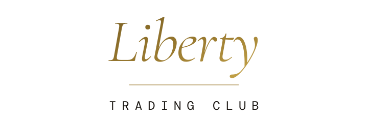
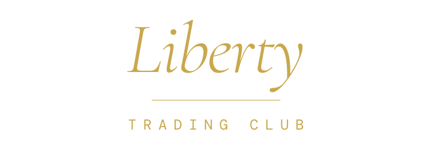
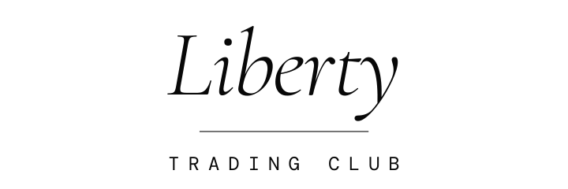
Área de respeto: el alto de la "L" del isotipo por cada lado. Ningún texto, borde ni imagen entra en esa zona.
| Versión | Mínimo digital | Mínimo impreso |
|---|---|---|
| Horizontal | 200 px de ancho | 40 mm |
| Logotipo | 160 px | 30 mm |
| Con respaldo | 240 px | 45 mm |
| Isotipo | 32 px (favicon) | 8 mm |
Por debajo del mínimo del logotipo se usa solo el isotipo.
Nombres prohibidos en cualquier pieza: Liberty Trading Pro, Liberty Club, Liberty Quant, Club Liberty Trading, Liberty Trading Club Club.
Negro profundo como base y un oro apagado, casi latón, como único acento. Evitamos el azul corporativo de banca, el verde neón cripto y el dorado brillante de los gurús. El oro saturado grita; este susurra. Los valores CMYK son aproximados: pide prueba de color a la imprenta.
En cualquier pieza, el color se reparte así:
Verde y rojo solo significan dinero. Ganancia y pérdida se usan únicamente en datos financieros y estados de sistema, nunca como decoración.
El resplandor dorado marca el punto de conversión. Uno por pantalla; si aparece en todo, deja de significar algo.
| Combinación | Contraste | WCAG |
|---|---|---|
| Crema sobre tinta | 17.0:1 | AAA |
| Latón sobre tinta | 8.76:1 | AAA |
| Tinta sobre latón (botón) | 9.19:1 | AAA |
| Piedra sobre tinta | 5.43:1 | AA |
| Ceniza sobre tinta | 2.14:1 | Falla: solo labels ≥14 px en mayúsculas |
Crema en vez de blanco puro: reduce la fatiga visual sobre negro y aporta la calidez editorial del concepto.
Cormorant Garamond italic 300, tracking −0.02em. La voz de autoridad. Solo titulares y citas, nunca texto corrido.
DM Mono. Cifras tabulares, labels en mayúsculas con tracking .15em y botones. Dice "esto es un dato, no una promesa".
Syne. Sans geométrica para párrafos e interfaz. Contrasta con la serif sin competir.
| Nivel | Tamaño (escritorio / móvil) | Familia | Nivel | Tamaño | Familia |
|---|---|---|---|---|---|
| Display | 72 / 48 px | Cormorant italic 300 | Body | 16 px | Syne |
| H2 | 48 / 40 px | Cormorant italic 300 | Label | 11 px, mayúsculas | DM Mono |
Las tres son de Google Fonts con licencia libre (OFL). Los archivos están en branding/manual/src/fonts.
Fondo de portadas y hero. Evoca una hoja de cálculo o un gráfico, sin decir "cripto".
Línea fina de latón sobre velas tenues. Siempre ilustrativa: nunca se presenta como resultado real.
Label mono dorada → titular Cormorant → regla → contenido.
Iconos: si se necesitan, de línea, 1.5 px, esquinas rectas, en latón o piedra. Nunca rellenos ni multicolor. Los emojis se reservan para WhatsApp. Textura de ruido al 4–5% sobre fondos grandes.
Retrato editorial de bajo perfil: luz cálida lateral sobre fondo casi negro, mirada directa, sin sonrisa de catálogo y sin objetos de estatus.
La foto debe transmitir "esta persona sabe lo que hace y no necesita demostrártelo".
| Sí | No |
|---|---|
| Escritorio real con NinjaTrader | Autos, relojes, fajos de billetes |
| Pantallas con datos reales | Capturas recortadas de ganancias |
| Luz cálida, fondo oscuro | Fondo blanco de estudio |
| Grano sutil, tonos neutros | Filtros saturados |
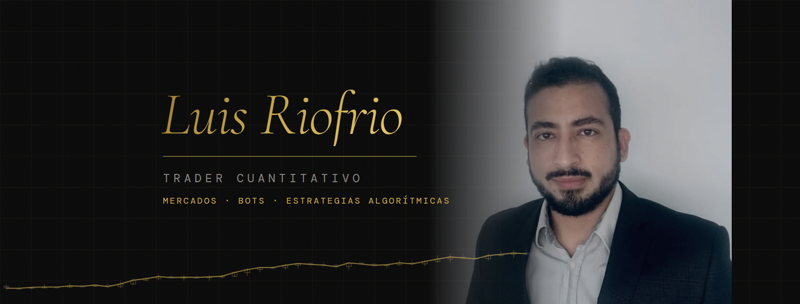
Estado actual: el retrato disponible tiene fondo claro. Se usa oscurecido y con máscara hasta la sesión profesional, que debe seguir esta guía (ver branding/05-guia-fotografia.md).
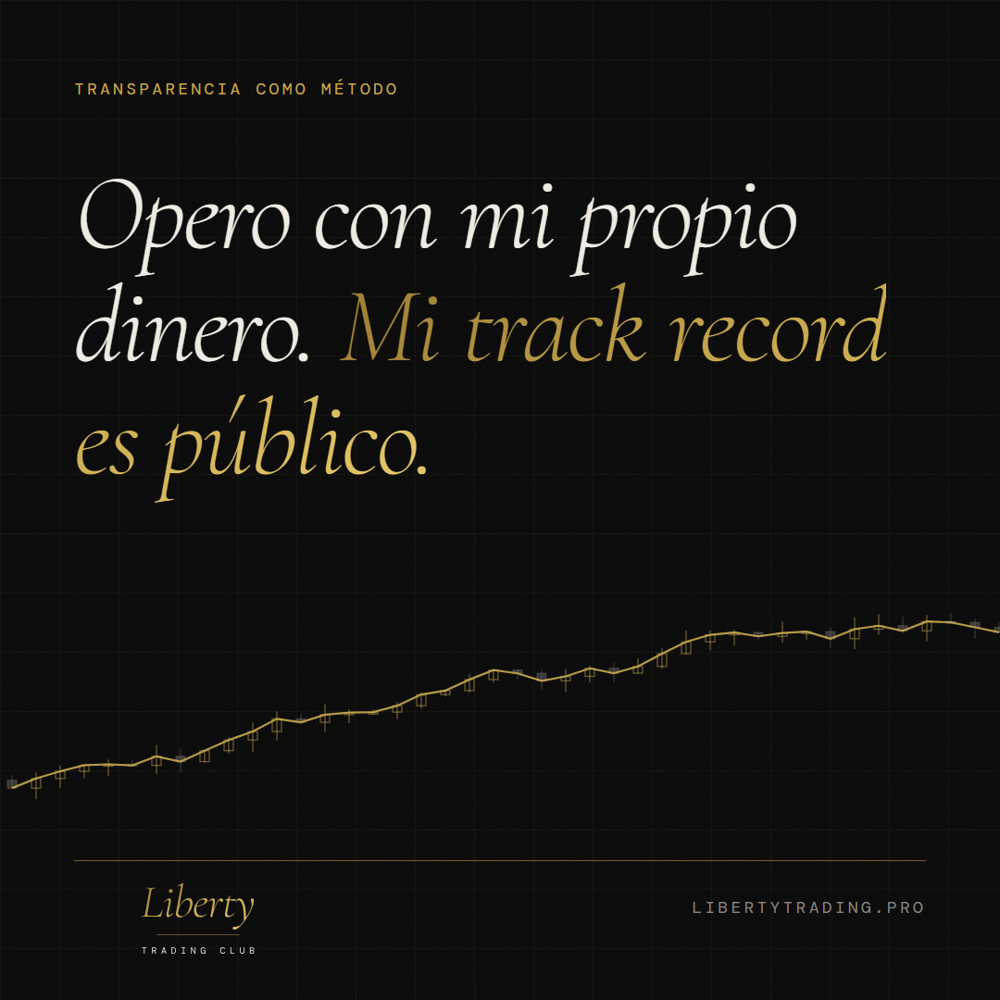
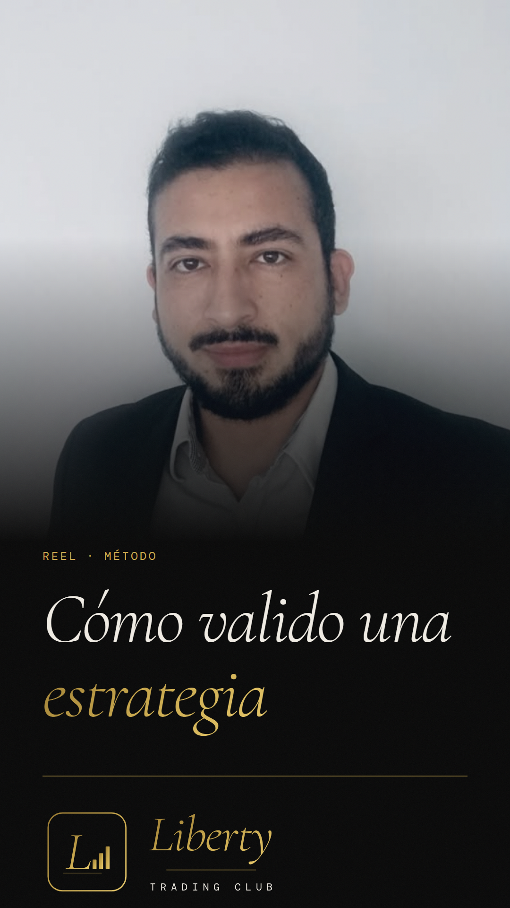
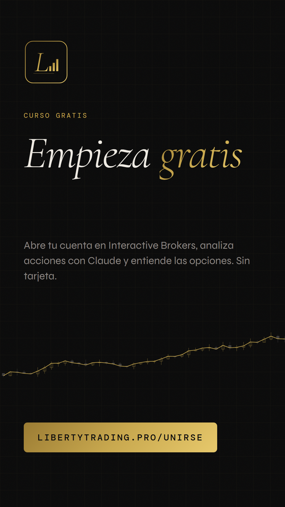
Estructura de post: dato o afirmación incómoda en la primera línea, contexto en dos o tres, y qué hacer con eso.
Reels: vertical, subtítulos quemados, gancho en 3 segundos, cierre con el curso gratis.
Temas: método, herramientas, mercado y el curso gratis.
CTA de todo el contenido orgánico: libertytrading.pro/unirse.
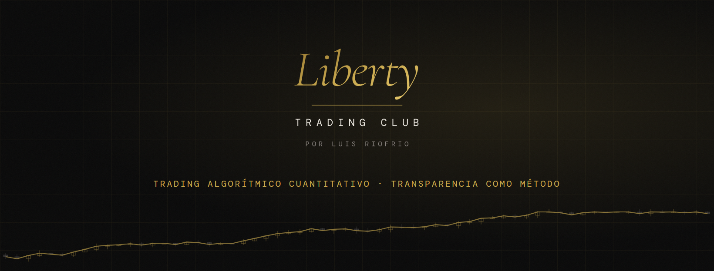
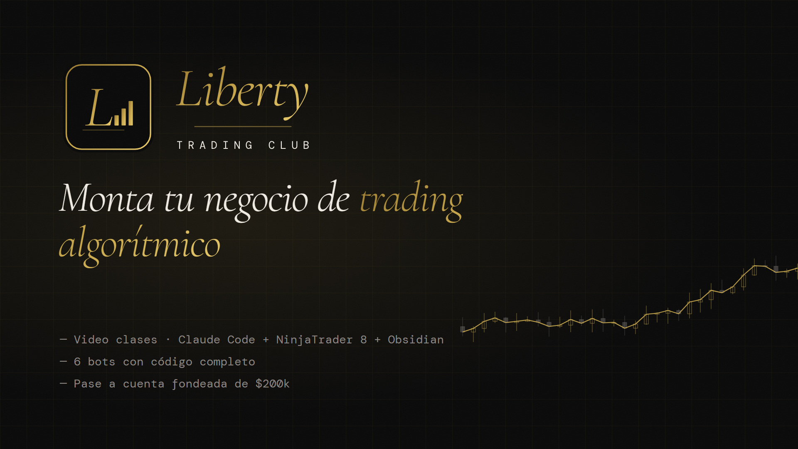
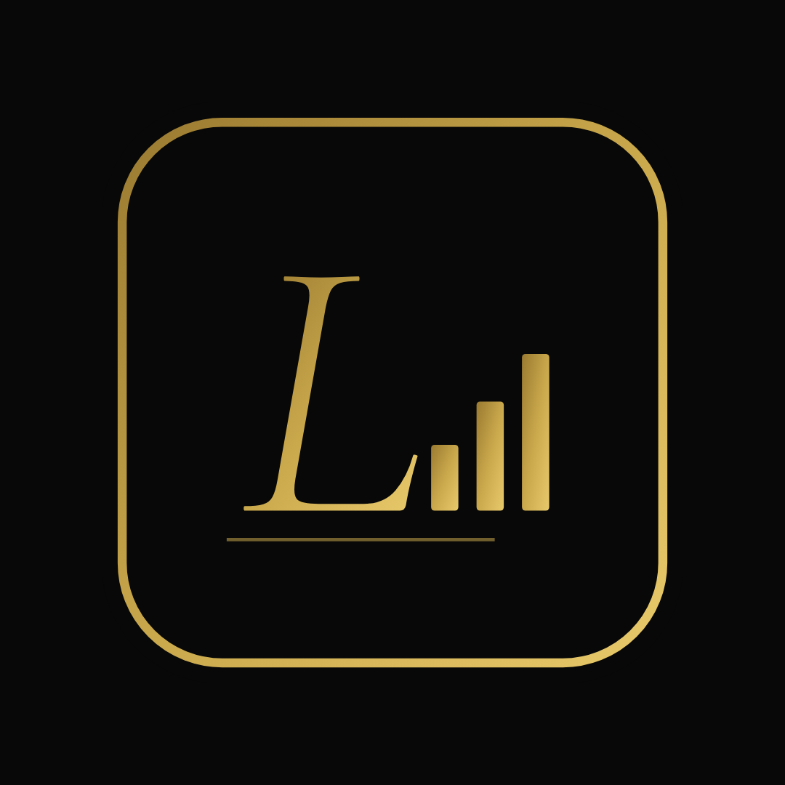
El isotipo es el avatar de las cuentas del producto (Facebook e Instagram de Liberty Trading Club). En las portadas de Facebook el centro es la zona segura: en móvil se recortan los lados.
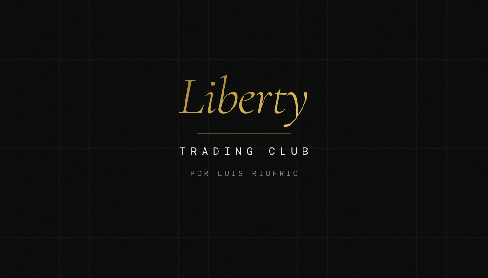
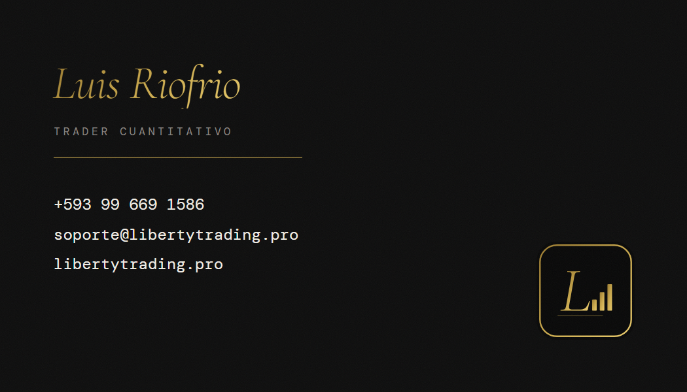
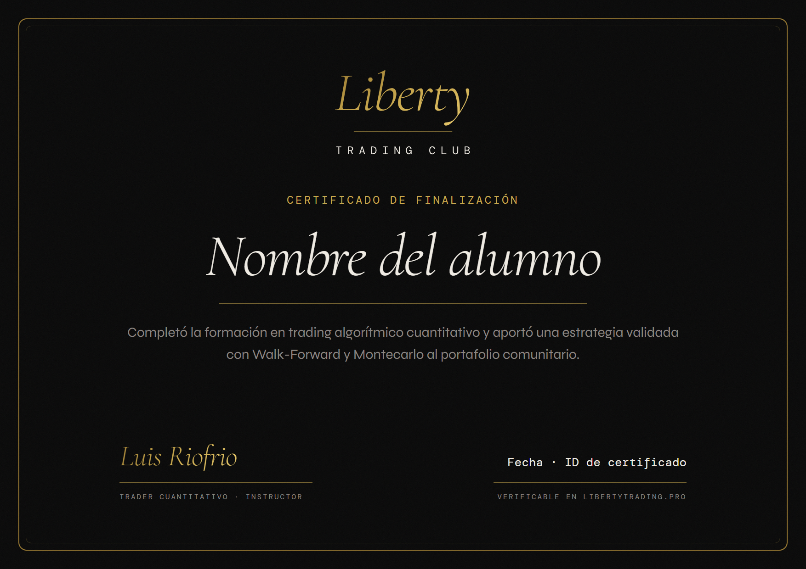
El certificado se entrega cuando el alumno aporta su estrategia validada al portafolio. Lleva un ID verificable en libertytrading.pro.
| Situación | Qué lleva |
|---|---|
| Cualquier cifra de rendimiento | "Resultados de mi cuenta de capital propio. Rendimientos pasados no garantizan resultados futuros." |
| Resultados de un bot | Indicar si son de backtest o de operativa real. "Todo sistema automatizado puede generar pérdidas." |
| Pase de fondeo | "Pase directo a una cuenta fondeada de $200k". Nunca "te damos $200k". |
| Landing, PDF y presentaciones con cifras | Disclaimer de riesgo completo al pie. |
Operar futuros, acciones, opciones y criptomonedas implica riesgo de pérdida de capital. Los resultados publicados corresponden a la cuenta de capital propio de Luis Riofrio y no garantizan rendimientos futuros. El contenido es educativo e informativo; no constituye una recomendación personalizada de inversión ni una oferta de valores.
Título profesional: "Trader cuantitativo". Nunca "Asesor de inversiones". Empleador: nunca en piezas de Liberty Trading Club.